|
8.1. Методика записи уравнений схемы.
Преобразуем с помощью метода дробных шагов неявную разностную схему (9.4)
в схему предиктор-корректор. Данная схема требует особого способа расщепления интервала  t (см. рисунок):
интервал t между точками 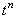
и 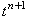 на разностной сетке расщепляется пополам (полученная промежуточная точка
обозначена, как 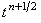); интервал 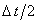
между точками и 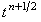 расщепляется на три равные части (полученные промежуточные
точки обозначены, как 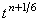 и 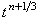). t (см. рисунок):
интервал t между точками 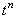
и 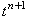 на разностной сетке расщепляется пополам (полученная промежуточная точка
обозначена, как 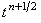); интервал 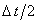
между точками и 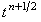 расщепляется на три равные части (полученные промежуточные
точки обозначены, как 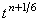 и 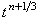).
На первой трети интервала записывается неявная разностная схема,
в которой учитывается только производная второго порядка по координате x:
На второй трети интервала записывается неявная разностная схема, в которой учитывается
только производная второго порядка по координате y:
На последней трети интервала записывается неявная
разностная схема, в которой учитывается только производная второго порядка по координате z:
Результатом последовательного решения подсхем (9.17)-(9.19), называемых в совокупности предиктором,
являются значения функции u на шаге по времени (n + 1/2). Для завершения расчётов
на всём интервале t используется поправочное разностное соотношение (корректор), имеющее вид с учётом
обозначений (9.2):
Таким образом, схема предиктор-корректор в случае трёхмерных задач состоит из четырёх подсхем.
|